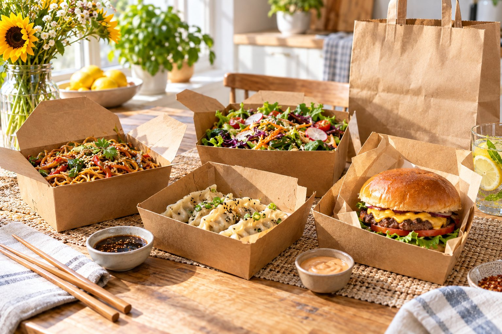
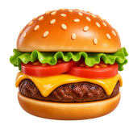
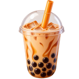

Vous ne trouvez pas ce que vous cherchez ? Envoyez un courriel et nous vous répondrons.
Non. Pour la Refonte Complète, vous nous ajoutez comme utilisateur sur votre Uber Eats Manager, et vous pouvez nous retirer à tout moment. Nous ne demandons jamais votre mot de passe.
Jamais. Nous n'améliorons que des photos de vos vrais plats : meilleure lumière, arrière plan propre et format adapté. Les clients doivent recevoir exactement ce qu'ils voient, et Uber Eats exige aussi des photos réelles. La maquette gratuite n'est qu'un aperçu conceptuel.
Généralement deux à trois jours ouvrables après que nous avons reçu vos photos et, pour la Refonte Complète, l'accès à votre Uber Eats Manager.
Personne ne peut honnêtement le promettre. Ce que nous faisons est de rendre votre page plus claire et plus appétissante, ce qui aide les clients à vous choisir.
Pour Menu Fix, rien : nous travaillons à partir de votre page actuelle. Pour les forfaits photo, envoyez des photos de vos plats prises sur votre téléphone dans une bonne lumière. Près d'une fenêtre est parfait.
Oui. Restaurants, établissements de vente à emporter, cafés, boulangeries et pâtisseries qui vendent sur Uber Eats. Nous ne travaillons pas avec les grandes chaînes ni avec des commerces qui vendent des produits emballés.
Non. MenuFix est un service indépendant et n'est pas affilié à Uber ni à Uber Eats.
Australie, Nouvelle Zélande, Royaume Uni, Irlande et plus. Les prix s'affichent dans votre monnaie.
Dites nous quel est votre restaurant, café ou boulangerie sur Uber Eats. Nous vous enverrons une maquette gratuite montrant comment votre page pourrait apparaître. Aucun paiement, aucune obligation.


